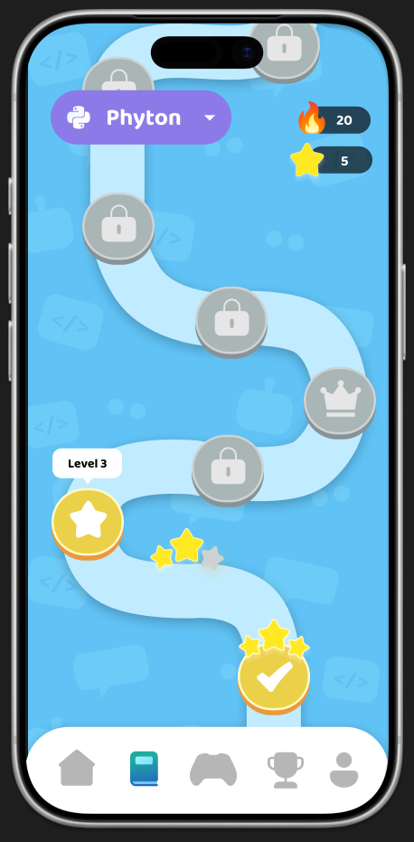
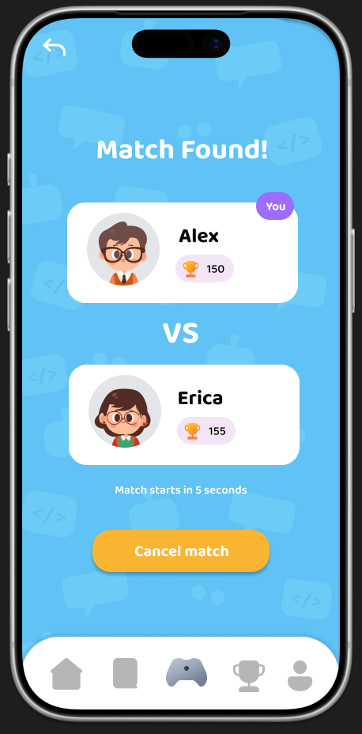

← All projects
Codu
Android app · Gamified coding education
Learn to code.
Play to progress.
A beginner-friendly coding app that turns practice into levels, rewards and quiz duels. Learn Python, C++, JavaScript or Java, then put your skills to the test against a friend.
- CourseMobile App System Design
- ToolsFigma · Flutter · Firebase
- ProjectTeam of 4


01 · The design challenge
Start small.
Build confidence.
Codu was designed to make programming feel approachable for new learners. The challenge was to turn learning, practice and progress into a connected experience that people would want to return to.
- 01
Where do I begin?
Beginners need a clear starting point and a path that builds difficulty gradually.
- 02
Practice needs a purpose
Each question should contribute to a visible goal, with progress beyond a completed exercise.
- 03
Mistakes need feedback
Correct answers, wrong attempts and level results need to communicate what happened.
- 04
Learning can be social
Friends, challenges and shared rankings give learners another reason to practise.
02 · Learning through play
Small lessons.
Visible progress.
Follow a path, one level at a time
Choose from Python, C++, JavaScript and Java. Short interactive questions increase in difficulty, with a coding assessment every five levels that asks learners to write code from scratch.
- Clear progressionThe level path distinguishes completed stages, the next challenge and locked content.
- Recognition over recallSubject cards and learning history make it easy to find a course and see where to continue.
Make effort visible
In learning levels, wrong answers cost a heart. Remaining hearts determine the stars earned on completion, while losing all hearts ends the attempt. A daily streak rewards completing a level, and hidden missions unlock badges.
- Immediate feedbackHearts, stars and distinct win or lose screens communicate the result of an attempt.
- Different rewards, different goalsStars reflect level performance, streaks track daily practice, and trophies support competitive rankings.
03 · The duel mechanism
Learn together.
Play to win.
Duel Mode turns programming practice into a real-time quiz competition, with points based on speed and accuracy.
Choose a subject. Find a rival.
Learners can challenge a friend or look for another player. After selecting a programming language, matchmaking looks for an opponent with a similar trophy count. The match-found screen introduces both players before the duel begins.
- Visible system statusThe matching flow, player details and countdown make the transition into a battle understandable.
- User controlA cancel action gives the learner a way out before the match starts.
Put your coding skills into play
Both players compete in programming exercises, with their scores visible above the question. The winner earns trophies. Global and friends leaderboards extend the challenge beyond one match.
- Visual hierarchyPlayer scores remain visible, while the question and answer choices hold the main focus.
- Consistent structureFamiliar question panels, rounded controls and the same visual language connect learning and competition.
04 · My contribution
My part in
the project.
I worked on the UI for character selection, the level path, level win and lose states, badge rewards, match found, duel battle, leaderboard, Add Friend and Help Center. I also wrote the UI Design and CRUD sections of our report.
- A four-person team projectMy teammates contributed authentication screens, home and profile screens, questions, settings, navigation implementation and Firebase setup. Add Friend UI was a shared contribution.
- Welcoming, game-inspired UIFriendly characters, colourful subjects and visible rewards carry the learning theme through the app.
- Design and implementationThe interface was designed in Figma and developed as a Flutter app with Firebase-backed account and friend features.
05 · Behind the social features
Friends stay
in sync.
The report documents Firebase Authentication, Cloud Firestore and local SharedPreferences storage. Related friend operations are grouped in batch writes so both users' records update together.
- 01
Update a username
Save the display name locally for a quick update, then update Firebase Authentication.
- 02
Send and accept requests
Create incoming and outgoing requests together. Accepting removes those requests and creates the friendship records.
- 03
Keep the list current
Firestore snapshot listeners update the friends list when records change, without a manual refresh.
- 04
Remove a friendship
A batch deletion removes each user from the other's friends list.